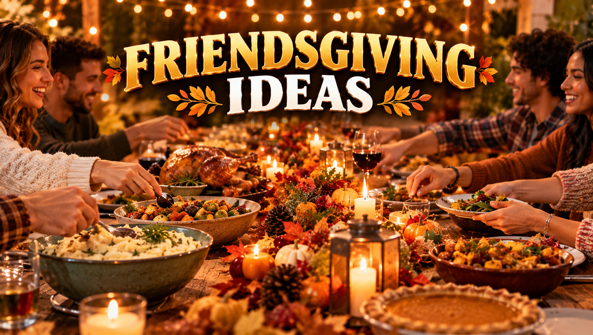

Friendsgiving Ideas 2026: Food, Decor, Games & Hosting Tips
Published October 12, 2026 · Updated October 12, 2026 · By EventBuzz Team

Friendsgiving is Thanksgiving's relaxed younger sibling: the same gratitude, the same feast, but with your chosen family, a potluck spread, and none of the formal pressure. It usually lands in the week or two before Thanksgiving — or right after it — whenever your whole group can actually show up. The formula that makes it work is simple: the host cooks the centrepiece, everyone else brings a dish, and the evening is built for lingering. This guide covers Friendsgiving ideas for 2026: planning and the guest list, a potluck menu that actually comes together, easy decor, games that break the ice, and hosting tips that keep the night effortless.
Planning and the Guest List
Friendsgiving works best at 6–14 people — enough for a lively table, few enough that everyone fits in one room and the food math stays sane. Send the invite 3–4 weeks ahead with the date, the potluck plan, and one honest line about what you are cooking, so guests know what is covered.
- Pick the date early: the weekend before Thanksgiving is the classic slot, but any evening in mid-to-late November works. Avoid the Wednesday night before Thanksgiving — half your group will be travelling.
- Ask about dietary needs upfront: one vegetarian, one gluten-free guest, one nut allergy — knowing in the first message saves menu chaos later.
- Keep the invite casual: a group chat thread works better than formal invitations. Friendsgiving is a sweatpants-optional occasion by design.
- Assign, don't hope: hoping "someone brings a side" gets you four bags of chips. A shared list where people claim specific dishes is the whole game — see the next section.
The Potluck Menu That Actually Works
The host takes the centrepiece — a roast turkey breast, a whole roasted chicken, or a big vegetarian main like stuffed squash — plus one reliable side. Everything else gets claimed from a list you post in the group chat:
- The list: post categories, not blank space — "2 starches, 3 veg sides, 1 salad, 2 desserts, drinks". People choose faster when the slots are named.
- Claim it in writing: first to claim a slot owns it. This prevents the classic triple-mashed-potatoes incident.
- Reheating plan: your oven will be busy. Ask guests to bring dishes that serve at room temperature or can be reheated in a microwave — and clear counter space for the arriving parade.
- Drinks as a category: make drinks a potluck slot too — one person brings wine, one brings beer or cider, one brings a non-alcoholic batch drink. A big-batch sangria or spiced apple cider in a dispenser covers the whole night cheaply.
- Dessert math: two desserts for up to ten people, three for more. Pie is traditional, but brownies, cookies, and anything bite-sized disappear faster at a standing-around-talking party.
For the full traditional menu to borrow dishes from, see our Thanksgiving Dinner Ideas.
Easy Friendsgiving Decor
Friendsgiving decor should look warm, not formal. Nobody wants to feel like they need good posture:
- The table: a kraft-paper runner guests can write gratitude notes on, scattered mini pumpkins and eucalyptus, and mixed candle heights. See our Thanksgiving Table Decor 2026 for the full place-setting playbook — then relax it a notch.
- String lights everywhere: the single fastest way to make any room feel festive. Drape them over the table, the mantel, the doorway.
- The gratitude wall: tape up a big sheet of paper with "Grateful for..." at the top and leave markers. By night's end it is covered — and it is the photo everyone shares.
- Disposable done right: for a crowd, sturdy disposable serving pieces beat a mountain of dishes. Small dessert cups and bowls keep the buffet tidy and the cleanup to one bag.
- Photo corner: one decorated corner with good light, a few props (funny hats, a "Friendsgiving 2026" sign), and let the group selfies happen. No photographer needed.
Games and Activities for the Night
One planned activity beats an evening of everyone scrolling phones between courses. Pick one early-evening icebreaker and one after-dinner game:
- Two truths and a thanks: each person shares two truths and one thing they are grateful for; the group guesses which is which. Warm, funny, and very Friendsgiving.
- Thanksgiving trivia: write 10–15 quick questions about the holiday, autumn, and your friend group. Losers do the dishes (kidding — mostly).
- Recipe swap: everyone brings a printed copy of the dish they made, with the recipe. Guests leave with dinner and a new recipe card.
- Board and card games: after dinner, clear one end of the table for party games. Our Best Party Games for Adults has a full list of crowd-pleasers.
- Friendsgiving awards: silly superlatives — best dish, best-dressed, most likely to take leftovers. Print simple certificates or just announce them dramatically.
Hosting Tips: Timeline, Seating, and the Drinks Station
The timeline: guests arrive 30 minutes before dinner; appetizers out on arrival; main course an hour in; dessert and games after. Text the group a loose schedule ("dinner around 7") so the turkey-carvers and the fashionably-late both land right.
Seating: for more guests than chairs, go buffet-style with mixed seating — dining table, couch, floor cushions. It feels intentional if the food station is styled and every seat has a plate and a drink within reach.
The drinks station: set up a self-serve corner with the batch drink, ice, glasses, and garnishes, and you never pour a drink all night. Label the dispensers — "spiked" and "not spiked" — so nobody guesses wrong.
Leftovers plan: buy inexpensive takeaway containers and announce at the start that everyone takes a box home. It is the most loved Friendsgiving tradition after the meal itself, and it empties your fridge.
Cleanup: enlist two friends for a 15-minute post-dinner reset while dessert is served. Many hands, loud music, done before anyone notices.
Friendsgiving Serving & Party Picks
Serving stands, trays and disposable dessert pieces for feeding a crowd with easy cleanup.


Prices shown at the time of publishing and can change. Links take you to AliExpress or Temu, where shipping and delivery details are shown.
Frequently Asked Questions
What is Friendsgiving?
Friendsgiving is a Thanksgiving-style feast celebrated with friends instead of (or as well as) family. It is usually a potluck, held in the weeks around Thanksgiving, with a relaxed, casual atmosphere.
When should I host Friendsgiving in 2026?
The weekend before Thanksgiving — November 21–22, 2026 — is the classic slot, since Thanksgiving itself is Thursday, November 26. Any evening in mid-to-late November works as long as it does not clash with family plans.
Who cooks what at a Friendsgiving potluck?
The host cooks the main dish (turkey, chicken, or a vegetarian centrepiece) plus one side. Guests claim the rest from a shared list of named slots — starches, veg sides, salad, desserts, and drinks.
How many people should I invite to Friendsgiving?
Six to fourteen is the sweet spot: lively enough for a real party, small enough to fit in one room and keep the food math manageable.
What games work well at Friendsgiving?
Two Truths and a Thanks, Thanksgiving trivia, a recipe swap, board and card games after dinner, and silly Friendsgiving awards all fit the casual, grateful mood.
How do I handle leftovers at Friendsgiving?
Buy inexpensive takeaway containers and tell guests at the start that everyone takes a box home. It is a beloved tradition and empties your fridge in one move.
Conclusion
Friendsgiving runs on one principle: shared effort, shared joy. You cook the centrepiece, friends fill the table, one game keeps the evening moving, and a self-serve drinks station keeps you out of bartending duty. Pick the date early, post the potluck list, decorate casually — and enjoy the easiest feast of the season with the people you chose.
More holiday help from EventBuzz:
Happy Friendsgiving — may your table be crowded, your leftovers many, and your dishes few!